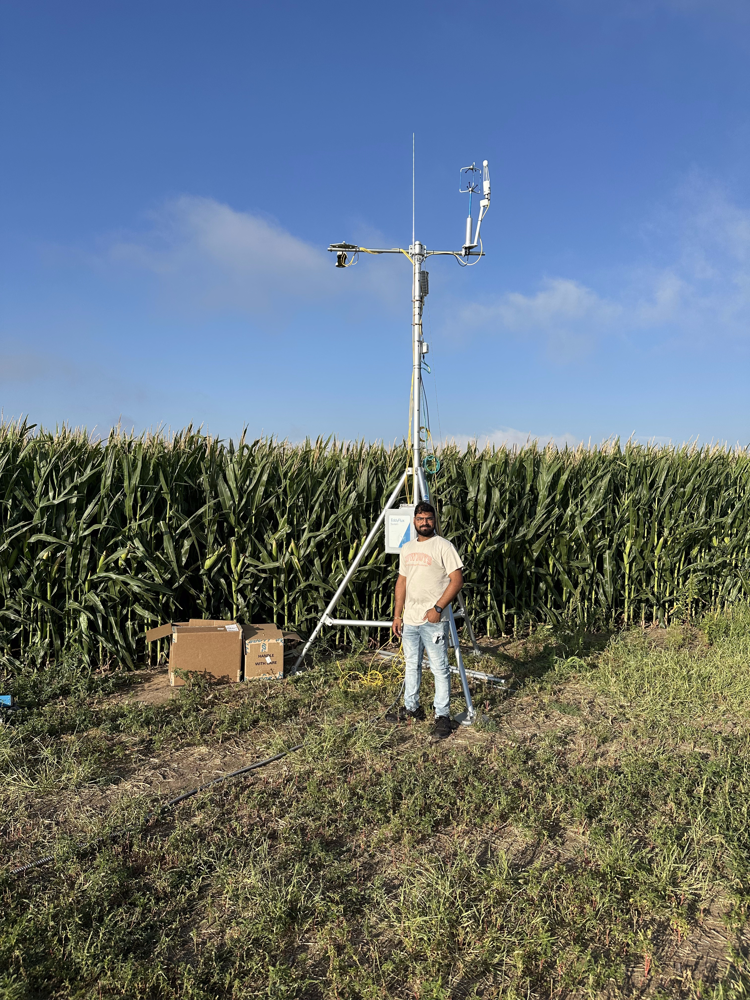

Current Role
Graduate Research Assistant, BAE, Oklahoma State University (May 2024 - Present)
Data + Agriculture + Impact
Graduate Research Assistant at Oklahoma State University building AI-powered irrigation tools and scalable soil moisture prediction systems for sustainable agriculture.
I started in Computer Science and moved into Biosystems and Agricultural Engineering to build practical technology for farmers. My current work blends machine learning, weather pipelines, and full-stack development to deliver accurate irrigation recommendations at scale.
Graduate Research Assistant, BAE, Oklahoma State University (May 2024 - Present)
Soil moisture modeling, irrigation scheduling, explainable AI, agricultural data systems
ASABE (ID: 1067786), IEEE (ID: 02039470)
Full-stack platform that integrates soil, weather, and crop inputs to generate field-level irrigation recommendations. Built with React, FastAPI, SQLite, Plotly, Docker, and pyfao56.
Automated GRIB2 ingestion and UTC-to-CST aligned forecast aggregation from NOAA NDFD to daily station-level CSVs for agricultural decision systems.
Compared LSTM, XGBoost, Random Forest, Transformer, and LightGBM with lag-based temporal features for autoregressive soil moisture prediction across Oklahoma conditions.
My PhD direction centers on integrating robust soil moisture prediction into farmer-facing tools, with explainable AI for model trust and transfer learning across long-term Mesonet datasets.

Open to collaborations in agricultural AI, water conservation technology, and applied data systems.